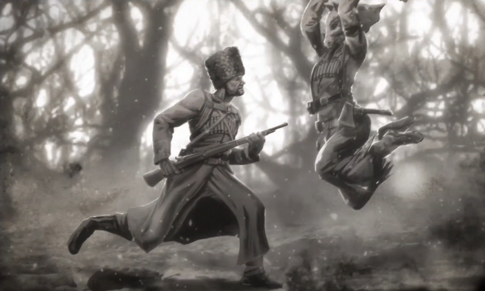
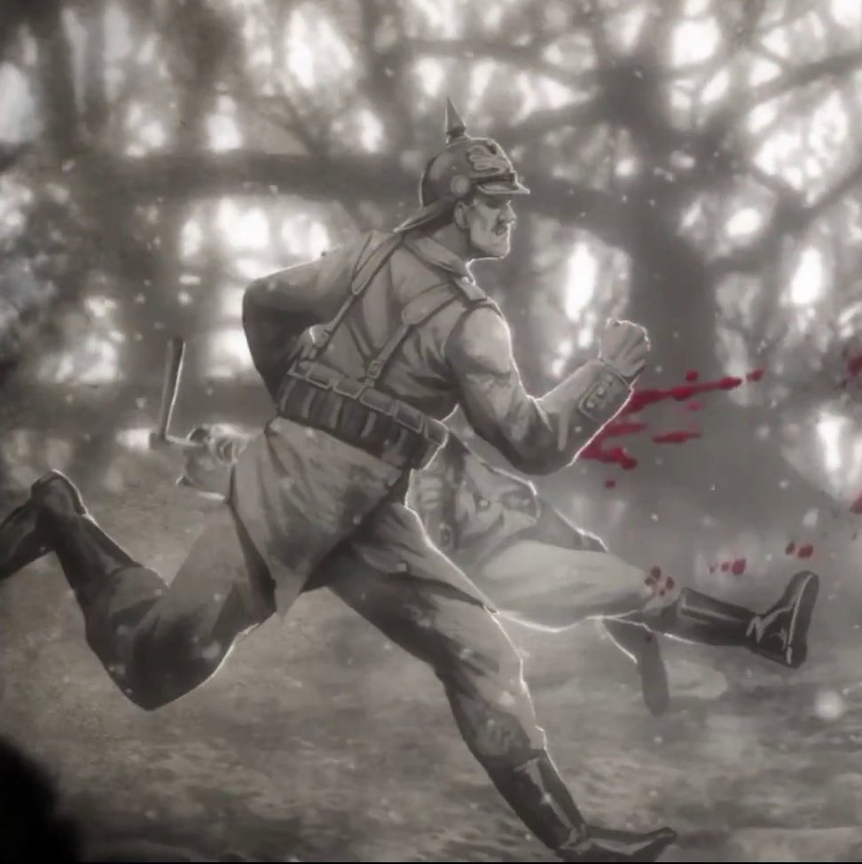

История Анны и воспоминания из архивов Dead by Daylight (том «Нарастание»)
← К картеОхотница (англ. "The Huntress") — один из персонажей игры Dead by Daylight в роли убийцы. Доступен для выбора сразу после активации бесплатного дополнения «Колыбельная для темноты». Настоящее имя убийцы — Анна, фамилия неизвестна. Убийца, которая может поражать выживших на расстоянии, бросая охотничьи топоры.
Как только Анна научилась ходить, мать начала обучать ее выживанию в глухом северном лесу. Проживание в таком далеком от цивилизации месте требует от тебя устойчивости и умения. Когда солнечный свет угасал, и делать что-либо снаружи становилось невозможным, они укрывались в доме, — ладно сбитой избушке, способной выдержать даже самую свирепую зиму. В тепле очага и материнских рук, Анна играла с деревянными игрушками и масками, сделанными мамой. Она засыпала под звуки сказок и колыбельных, ее посещали только светлые и добрые сны. Она еще не знала, что скоро все изменится.
Как-то Анна со своей матерью выслеживали гигантского лося в чаще. Они знали, что животное это — крайне опасное, но особенно холодная зима и скудные запасы пищи заставляли их рисковать. Страх перед смертью от голода был сильнее ужаса от любого лесного обитателя. Без какого-либо предупреждения огромный лось взревел и бросился на Анну. Ее парализовал страх, а весь мир будто задрожал под копытами этого поистине адского жителя леса. Лось был настолько близко, что Анна могла разглядеть животную ярость в его глазах. Именно в этот момент между ними появилась мать с топором в руке. С ее губ сорвался крик, от которого кровь стынет в жилах, когда лось поднял мать на своих исполинских рогах в воздух. И пока тот пытался стрясти человека, она раз за разом вонзала топор в голову зверя. С ужасающим хрустом рога лося сломались и мать Анны была на свободе. Зверь пал.
Анна была еще слишком мала, чтобы самой оттащить искалеченное тело матери домой, поэтому девочка осталась сидеть с ней на опушке, где произошло сражение. Чтобы отвлечь Анну от ужасных предсмертных хрипов лося, мать обняла ее и напевала дочери ее любимую колыбельную. Так они и лежали, пока тела лося и матери полностью не охладели, а Анна осталась в полной тишине, одна в лесу. В конце концов она поднялась и направилась к дому.
Даже будучи маленьким ребенком, она уже знала достаточно, чтобы выжить в замерзшем лесу. Отдавшись своим инстинктам, она породнилась с дикой природой. Она повзрослела, окрепла и овладела искусством охоты. Становясь опасным хищником, человечность Анны угасала с каждым днем.
Она промышляла охотой и расширила границы своих владений. Начинала она с белок, зайцев, норок и лисиц. Но такая добыча ей вскоре наскучила, и Анна переключилась на более опасных жителей леса, — медведей и волков. А когда ничего не подозревающие путники забрели к ней, она открыла для себя свою любимую добычу — людей. Несчастные души, потерявшиеся в ее владениях были сражены как любой другой зверь. Ей нравилось собирать с их тел инструменты и яркие побрякушки, но особенно она любила игрушки, если среди добычи были малыши. Но самих маленьких девочек она никогда не трогала.
Девочек она забирала далеко в лес, в свою хижину. Анна очень дорожила ими — глядя на них, в сердце у нее теплились давно забытые чувства. Она выбрала себе любимицу, нарекла ту своим ребенком. Среди украденных игрушек, кукол и книг, которые некому было прочесть, сидели девочки, крепко привязанные за шеи веревками к стене. Анна не могла позволить им выходить из дома — снаружи дети бы точно погибли.
Каждый раз, девочки умирали от болезней, или холода. Каждый раз это погружало Анну еще глубже в пучину боли и безумия. Она намеревалась попробовать еще раз, и начала совершать набеги на ближайшие деревни, вырезая семьи и похищая их дочерей. Чтобы успокоить испуганных детей, она начала носить маску животного, сделанную ее матерью много лет назад. Деревенские жители слагали легенды о полузвере-получеловеке, живущем в Красном Лесу — об Охотнице, которая убивала взрослых и поедала детей.
Вскоре до леса добралась великая Война. В чаще маршировали немцы, сминая ослабевшую Российскую Империю. В эти темные времена путников в лесу больше не было. Деревни тоже опустели, там больше не было детей, — только солдаты. Многие из которых были найдены со следами ужасных ран от топора. Пропадали целые отряды. Но как только Война закончилась, прекратились и слухи об Охотнице — их поглотил Красный Лес.
Воспоминания о персонаже Охотница, доступные в архивах в рамках третьего тома книги «Нарастание». Для открытия нового воспоминания необходимо пройти соответствующее испытание от мастера в сети Ауриса. Наградой за открытие всех воспоминаний является небольшой видеоролик, кратко пересказывающий фрагменты собранных воспоминаний.


Рассвет растекается по кратерам и траншеям, и первые лучи падают на разоренный лес. Землю разрывает взрывами. Почва взлетает в воздух и осыпает Анну. Люди спотыкаются и камнями валятся в открытые кратеры, полные гниющих трупов. Крысы пируют на искалеченной человеческой и лошадиной плоти. От других людей взрывы оставляют лишь ошметки. Кто-то тонет в крови и грязи. Беспощадная жестокость этого зверья в человеческом обличье веселит Анну. Ее в жизни так не развлекали. Они хуже голодных волков, дерущихся за труп. Кто-то говорит на языке, который она понимает. Слова других звучат для нее тарабарщиной. Внезапно она вздрагивает от чьего-то душераздирающего крика, подобного которому ей еще не приходилось слышать. Она идет на звук — вглубь опустошенного леса — и обнаруживает небольшую брезентовую палатку и русских солдат, охраняющих иностранных пленников. Она наблюдает за ними весь вечер. В ужасе смотрит, как они режут на ужин одну из лошадей. Столько мяса пропало зря из-за небрежной разделки. После ужина русские хватают одного из пленников и разбивают ему голову лопатой, чтобы чем-то занять время. Они хохочут и шутят. Она наблюдает за ними из сумрака и тоже беззвучно смеется. Не с ними. Над ними. Лопата большая. Удары неуклюжие. Смерть… неаккуратная. Эти люди неумелые и неуклюжие. Мама научила ее лучше.
Она хотела поискать другую стаю людей-животных, но тут замечает кое-что интересное. Кое-что, напомнившее ей об отце. Идеальное для её малышки. Подарок. Анна прячется в тенях и не спускает с подарка глаз. Русский солдат вырезает его, пока охраняет пленников в драной палатке и осыпает их ругательствами. Они убивают и пытают друг друга, потому что не могут нормально поговорить. Анна вспоминает мамину книгу. Мама показывала на картинки и называла их солдатами. Это они зарезали ее отца. Солдаты раздирают друг друга на части по причинам, которые у мамы никогда не получалось объяснить. Анна смотрит и не понимает. Она не уверена, что и они понимают. Может, им нравится охота, запах страха, жажда крови. Она изучает идеальный подарок и хочет показать им войну, которую они никогда не забудут. Но их слишком много, и перед ней вдруг появляется мама и говорит, что Анечке надо проредить их ряды. Я смогу. Я покажу тебе. Тебе покажу и им покажу… где раки зимуют.
Русский солдат делает что-то интересное с пленником. Привязывает его за щиколотку к покореженной ветке и разводит костер в нескольких сантиметрах под ним. Охотница морщит лоб. Непонятно. Перед жаркой дичь надо убить. Но солдатам нравятся мучения. Она узнает кричащего иностранца. Еще несколько лун назад в другой палатке он пытал русских пленников. Еще несколько лун назад он был палачом. Русский держит в руках идеальный подарок, пока пленный вопит и визжит недорезанной свиньей. Анна ухмыляется. Вопль… смешной. Правда. Он забавляет. Русские шутят и передразнивают визжащего пленника. Она с трудом подавляет рвущийся наружу смех. В жизни не слышала звука нелепее. Шаги солдата застают ее врасплох. Она резко оборачивается и видит, как в лицо ей летит сверкающий на солнце штык. Она отклоняется и хватает жалкого, тощего парня за шею, сжимает мозолистыми пальцами его выпирающий кадык и дергает с убийственной яростью. Он падает, захлебнувшись криком. Труп с вырванным горлом валится на землю. Она вновь поворачивается к гогочущим русским и визжащему человеку-свинье. Она улыбается мысли о том, что все они заголосят так же, когда она ими займется.
Четверо русских солдат шныряют вокруг палатки в поисках пропавшего товарища. Анна незаметно крадется за одним из них, с каждым шагом приближаясь. Бедненький зеленый ослик. Он понятия не имеет, что ему осталась пара последних вдохов. Одну долгую секунду она наблюдает за ним, а потом специально наступает на ветку. Хруст заставляет его развернуться, но он даже не успевает встретиться глазами с Анной, когда ее топор разрубает пополам его нос, крошит зубы и отрезает язык. Ладонью она зажимает ему окровавленный рот, а второй рукой роется в его карманах в поисках идеального подарка. Ничего. Она отнимает ладонь, чтобы хрип и хлюпанье подманили оставшихся троих. Те осторожно приближаются, выставив перед собой штыки. Она сжимает зубы, охваченная гневом и жаждой крови. Швыряет в них головой их товарища. Секундный шок — большего ей и не надо. Она прыгает и валит двоих одним взмахом топора. Оставшийся солдат с воплем кидается на нее, и она встречает его широким махом, который сносит ему голову. Из шеи хлещет кровавый гейзер, в то время как обезглавленное тело тупо шатается взад-вперед, словно в поисках головы. Оно почти заваливается вперед, но затем опрокидывается назад и падает. Звук еще одной атаки настигает ее раньше клинка. Два взмаха справа и слева, и искромсанное тело падает на землю. Солдат тупо смотрит на куски мяса, только что бывшие частями его собственного тела. Анна смеется и вспоминает сказку, которую часто рассказывала мама. Прости, яичко, обратно собрать не получится.
Анне интересно наблюдать за солдатами. Еще недавно это были русские и иностранцы, сжигающие друг друга заживо, а теперь… теперь они заодно и пытаются выжить в схватке с ней. Её называют гулем, монстром, лесным чудовищем, волколаком. Солдаты сообща роют ямы и устраивают ловушки в лагере. Анна играет с ними. Они превосходят её числом, и она это понимает. Она изматывает их, не давая спать. Каждую ночь она подходит к лагерю. Поет колыбельную, а потом воет, как волколак. Солдаты просыпаются в панике и с ужасом разбегаются, а она возвращается к себе в хижину спать с малышом. Отдыхает несколько часов, а потом снова идет на эту войнушку, чтобы заново раскрутить колесо страха. Пара бессонных ночей — и они начнут рвать друг друга на части. И тогда останется только подойти к лагерю и забрать то, что принадлежит её малышке.
О переводе. В ходившем по сети русском переводе воспоминаний №2433 и №2436 подарок предназначен «бабуле». Это ошибка локализации: в оригинале это «her little Bushka» — её Бушка, та самая девочка, которую Анна держит в хижине и с которой засыпает («спать с малышом» в №2436), а не некая бабушка. Здесь возвращено по смыслу оригинала — «её малышка», — иначе выходит противоречие внутри одного и того же воспоминания.
Часть выводов на карте опирается не на биографию и воспоминания, а на официальные описания внутриигровой косметики Анны из того же тома «Нарастание». Описание тела «Клетчатое прошлое» прямо называет казака, которого Анна убила (см. врезку выше). Описание маски «Всадница апокалипсиса» добавляет ещё один географический признак: «…подошла бы Анне, когда она вырезала немецких кавалеристов». Пригодность маски подана условно, но сам факт — что рядом с её лесом действовала немецкая конница — утверждается прямо. На карте это отдельный фактор «немецкая кавалерия»: крупнейший конный рейд по здешним лесам, Свенцянский прорыв сентября 1915-го, прошёл через Восточную Литву и Западную Беларусь.